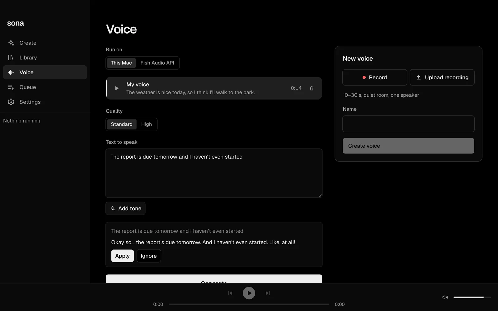
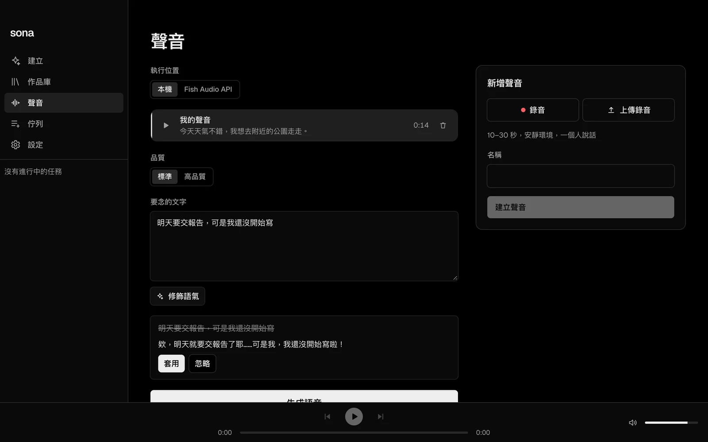

Fifteen seconds of a voice.
Then it says anything.
十五秒的聲音，
之後什麼都能說。
Voice cloning that runs on your own computer. Free and open source. 在你自己的電腦上複製聲音。免費、開源。
Original recording原始錄音 ·
Then Sona says接著 Sona 說
Flat text, read with feeling照稿念，也能有語氣
Press Add tone and your own Claude Code or Codex rewrites the line the way people talk.按「修飾語氣」，你自己的 Claude Code 或 Codex 會把句子改成真人說話的樣子。


Sona also writes songs from a style and lyrics, and splits any song into vocals, drums, bass and the rest. Recordings and songs stay on your computer. Sona 也能用風格和歌詞寫歌，或把一首歌拆成人聲、鼓、貝斯和其他。錄音和歌都留在你的電腦上。